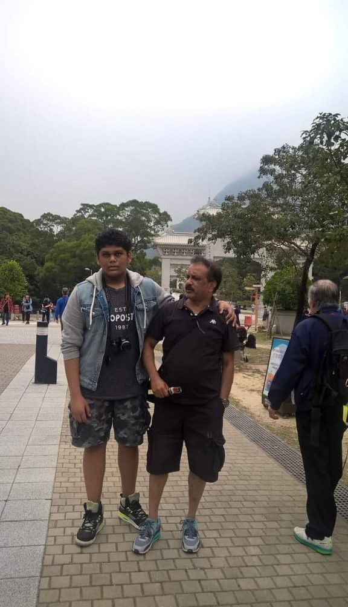

Hong kong

Hong kong is a pretty city and is now under administrative rule of the Chinese government. The country is very clean and green with the flora and fauna spread around.
Unlike mainland china Hongkong is more of a tourist spot with attractions such as casinos, bars shopping centers all over the city.
The main attraction in hongkong are the Big Buddah Temple and DisneyLand. The buddah temple is the biggest in the world as the Buddism is the main religion followed in mainland china.
The city is also infamous for its construction which result in huge sky scrappers which seem like they are about to touch the sky
Bangkok
Bangkok is a state that comes under thailand it is one of the best tourist hubs if your going to enjoy and have a relaxing getaway with freinds and family.
The cuisine the night life the art or maybe the countless buddisst temples there is always something intresting.
The nightlife in bangkok is very nice it is as if the city never sleeps even at 3am you can
see people roaming around like its noon.
The beaches in the city are breath-taking however the best beaches can be found in a nearbyneighbouring city called pataya which is only 4 hours of drive from bangkok.
Malaysia
Malaysia is a predominant muslim country and sharing its deep roots with islam. The country is very multi-cultural with major influences from India,China and Indonesian.
Malaysian cusisine is very flavorful and also reflects the multi-ethnic makeup of its population. Some of the main Malaysian cusisine dishes are nasi briyani, nasi minyak, lamb soup, kurma daging.
The country has also taken influences from the western world with mnalls, shopping centers and tall buildings an expmple being the Petronas Towers